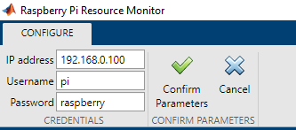
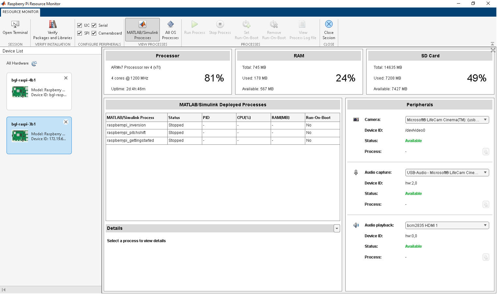
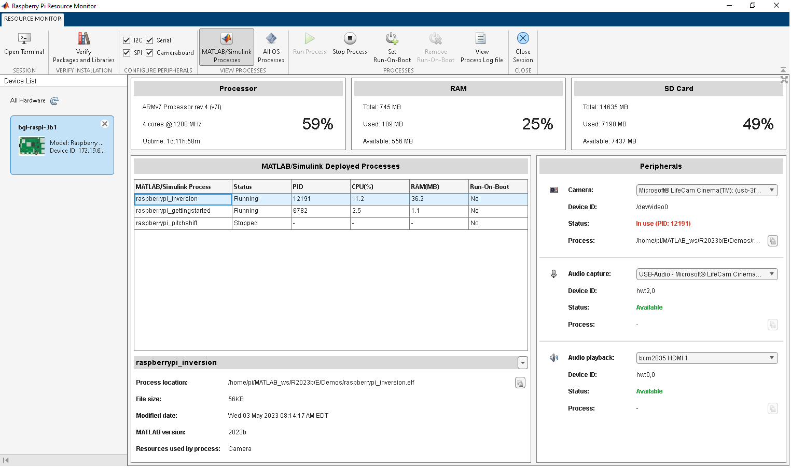
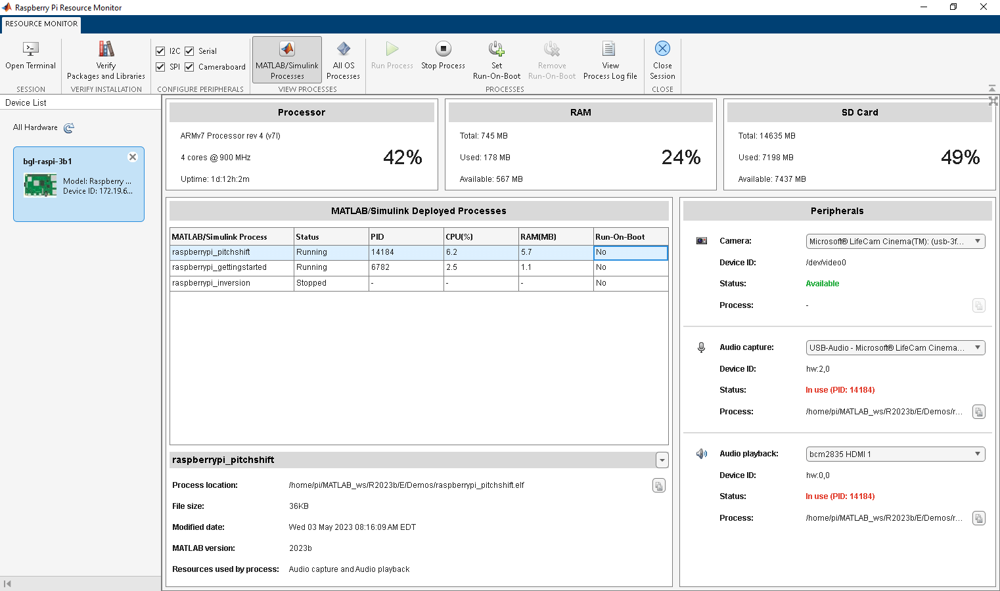

Raspberry Pi Resource Monitor App
Monitor and manage Raspberry Pi resources
Description
Monitor and manage Raspberry Pi® resources such as MATLAB®/Simulink® deployed processes, CPU, RAM, SD card, external peripheral devices, and interfaces.
Use the Raspberry Pi Resource Monitor app to:
Calculate average Raspberry Pi CPU utilization percentage across all cores
View RAM utilization percentage
View total SD card memory utilization percentage
Run and stop MATLAB/Simulink deployed processes
View Raspberry Pi CPU and RAM utilization percentage for MATLAB/Simulink deployed processes
View log file for MATLAB/Simulink deployed processes
Open Raspberry Pi terminal
Configure two or more Raspberry Pi target boards
Use the available audio and video devices for MATLAB/Simulink deployed process
Set a MATLAB/Simulink deployed process to run-on-boot
Display peripherals used in a MATLAB/Simulink application deployed on the Raspberry Pi hardware
Enable and disable various interfaces, such as SPI, I2C, Cameraboard, and Serial port
Verify installation status of the required Raspberry Pi libraries and packages
Display all processes currently running on the Raspberry Pi hardware
Note
Simulink Online™ does not support the Raspberry Pi Resource Monitor app currently.
Open the Raspberry Pi Resource Monitor App App
MATLAB Toolstrip: On the Apps tab, under Test and Measurement, click the app icon.
MATLAB command prompt: Enter
raspberryPiResourceMonitor.
Examples
This example shows how to use the Raspberry Pi Resource Monitor app to configure the Raspberry Pi target board on the host computer. Ensure that the target board and the host computer are connected to the same network for a successful communication.
Open the Raspberry Pi Resource Monitor app.
On the Device tab, select Configure a New Connection.
Enter the Raspberry Pi IP address, Username, and Password.
Click Confirm Parameters. You can view the configured target board in the Device List pane of the app.

Follow the same procedure to configure another Raspberry Pi target board to the host computer.

This example shows how to use the Raspberry Pi Resource Monitor app to check for missing libraries and packages in the support package. You can use this feature as a preliminary step before you deploy any Raspberry Pi MATLAB or Simulink processes on the hardware board.
Open the Raspberry Pi Resource Monitor app.
On the Resource Monitor tab, in the Verify Installation section, click Verify Packages and Libraries. The app checks for any missing packages and libraries and notifies you regarding which packages and libraries are missing. You may want to install them based on your requirement.
For example, if you did not install the senseHAT library from the Hardware Setup window and tried to deploy the raspberrypi_audioVisualizer Simulink model in the Simulate Audio Visualizer on Raspberry Pi Sense HAT (Simulink) example on the Raspberry Pi hardware board, the model is not deployed on the target hardware. You can click View Process Log file to view the error message and other details of the deployment failure on the target hardware. To check the missing libraries and packages from the Raspberry Pi hardware board, click Verify Packages and Libraries and install the missing senseHAT libraries from the Raspberry Pi Hardware Setup window.
This example shows how to use the Raspberry Pi Resource
Monitor app for the Implement Image Inversion Algorithm Using Raspberry Pi (Simulink) example in the Simulink Support Package for Raspberry Pi Hardware. It utilizes an externally interfaced USB camera and the
raspberrypi_inversion
Simulink model. Follow these steps and monitor the Raspberry Pi resources on the app:
Complete the Implement Image Inversion Algorithm Using Raspberry Pi (Simulink) example and deploy the model as a standalone application on the Raspberry Pi target board.
Ensure to select the Hardware board as Raspberry
Pi and configure the Raspberry Pi target board parameters in the Configuration
Parameters dialog box.
Open the Raspberry Pi Resource Monitor app.
Configure the same Raspberry Pi target board on the app.
Observe the following in the raspberrypi_inversion
Simulink model:
Model entry appears in the MATLAB/Simulink Deployed Processes table
Status of the model is
RunningCPU(%) and RAM(MB) columns in the MATLAB/Simulink Deployed Processes table display the total Raspberry Pi core and RAM percentage occupancy, respectively
Process ID is assigned to the Simulink model
Process path is populated
Status of the camera in the Peripherals pane is
In-useStatus of the camera in the Interfaces section is
EnabledSee the Resources used by process section for the
Cameraperipheral that theraspberrypi_inversionmodel uses

Select the model row in the MATLAB/Simulink Deployed Processes table. The section below the table is populated with the model details such as Process location, File size, Modified date, and MATLAB version.
To copy the process path, click the copy icon next to Process location.
To stop running the Simulink model, select the row for the model in the MATLAB/Simulink Deployed Processes table. In the Resource Monitor tab, click Stop process. Observe that:
Status of the model is changed from
RunningtoStoppedNo Process ID is assigned to the Simulink model
Simulink model does not occupy the Raspberry Pi CPU and RAM
Status of the camera is now changed from
In-usetoAvailable
To run the Simulink model every time the target board reboots, select the row for the model in the MATLAB/Simulink Deployed Processes table. In the Resource Monitor tab, click Set Run-On-Boot.
You can also perform Monitor & Tune to run the model on
the Raspberry Pi hardware. On the Hardware tab of the Simulink model, in the Mode section, select Run
on board, and then click Monitor & Tune.
While the model is running, you can change the value of the
Constant block in the model from 255 to
120 and observe the processed image output.
This example shows how to use the Raspberry Pi Resource
Monitor app to deploy a simple MATLAB function, raspberrypi_camera, on the Raspberry Pi target board. This function uses an object, webcam, that represents a connection from the MATLAB software to a web camera interfaced with the Raspberry Pi target board. Follow these steps and monitor the Raspberry Pi resources on
the app:
Open a new script file and type the code.
function raspberrypi_camera() r = raspi(); w = webcam(r); pause(0.1); while 1 sp = snapshot(w); displayImage(r,sp); pause(0.1); end end
Save the file as raspberrypi_camera.m.
Ensure to select the Hardware board as Raspberry
Pi and configure the Raspberry Pi target board parameters in the Configuration
Parameters dialog box.
Open the Raspberry Pi Resource Monitor app.
Configure the Raspberry Pi target board on the app.
In the MATLAB command prompt, run these commands to generate a configuration object and deploy the function as a standalone executable on the Raspberry Pi target board.
For Raspberry Pi with 32-bit OS use:
t = targetHardware('Raspberry Pi')
deploy(t,'raspberrypi_camera.m')t = targetHardware('Raspberry Pi (64bit)')
deploy(t,'raspberrypi_camera.m')Observe the following for the raspberrypi_camera.m
MATLAB function:
Function entry appears in the MATLAB/Simulink Deployed Processes table
Status of the function is
RunningCPU(%) and RAM(MB) columns in the MATLAB/Simulink Deployed Processes table display the total Raspberry Pi core and RAM percentage occupancy, respectively
Process ID is assigned to the MATLAB function
Process path is populated
Status of the camera in the Peripherals pane is
In-useStatus of the camera in the Interfaces section is
EnabledSee the Resources used by process section for the
Cameraperipheral that the MATLAB function uses
Select the model row in the MATLAB/Simulink Deployed Processes table. The section below the table is populated with model details such as Process location, File size, Created on, and MATLAB version.
To copy the process path, click the copy icon next to Process location.
To stop running the MATLAB function, select the row for the model in the MATLAB/Simulink Deployed Processes table. In the Resource Monitor tab, click Stop process. Observe that:
Status of the function is changed from
RunningtoStoppedNo Process ID is assigned to the MATLAB function
The MATLAB function does not occupy the Raspberry Pi CPU and RAM
Status of the camera is now changed from
In-usetoAvailable
This example shows how to use the Raspberry Pi Resource Monitor app in the Read Temperature from TMP102 Sensor Using Raspberry Pi (Simulink) example to enable or disable the external peripheral I2C on the Raspberry Pi hardware kernel. You can follow the same procedure to enable other external peripherals such as SPI, Cameraboard, and Serial port and observe the Utilized resources section for the deployed application on the Raspberry Pi hardware.
Open the Raspberry Pi Resource Monitor app.
On the Resource Monitor tab, in the Configure Peripherals section, notice that I2C is enabled by default.
Complete the Read Temperature from TMP102 Sensor Using Raspberry Pi (Simulink) example and deploy the model as a standalone application on the Raspberry Pi target board.
Observe the Resources used by process section for the
I2C peripheral that the example uses.
This example shows how to use the Raspberry Pi Resource
Monitor app for the Shift Pitch of Audio Signal Using Raspberry Pi (Simulink) example. It uses an
externally interfaced USB microphone or a web camera microphone, and a pair of headphones.
This example utilizes the raspberrypi_pitchshift
Simulink model. Follow these steps and monitor the Raspberry Pi resources on the app:
Complete the Shift Pitch of Audio Signal Using Raspberry Pi (Simulink) example and deploy the model as a standalone application on the Raspberry Pi target board.
Ensure to select the Hardware board as Raspberry
Pi and configure the Raspberry Pi target board parameters in the Configuration
Parameters dialog box.
Open the Raspberry Pi Resource Monitor app.
Configure the same Raspberry Pi target board on the app.
Observe the following for the raspberrypi_pitchshift
Simulink model:
Model entry appears in the MATLAB/Simulink Deployed Processes table
Status of the model is
RunningCPU(%) and RAM(MB) columns in the MATLAB/Simulink Deployed Processes table display the total Raspberry Pi core and RAM percentage occupancy, respectively
Process ID is assigned to the Simulink model
Process path is populated
Audio capture and Audio playback status in the Peripherals pane is
In-useSee the Resources used by process section for the
audio playbackandaudio captureperipherals that theraspberrypi_pitchshiftmodel uses
Select the model row in the MATLAB/Simulink Deployed Processes table. The section below the table is populated with the model details such as Process location, File size, Created on, and MATLAB version.
To copy the process path, click the copy icon next to Process location.
To stop running the Simulink model, select the row for the model in the MATLAB/Simulink Deployed Processes table. In the Resource Monitor tab, click Stop process. Observe that:
Status of the model is changed from
RunningtoStoppedNo Process ID is assigned to the Simulink model
Simulink model does not occupy the Raspberry Pi CPU and RAM
Status of the Audio capture and Audio playback is now changed from
In-usetoAvailable
To run the Simulink model every time the target board reboots, select the row for the model in the MATLAB/Simulink Deployed Processes table. In the Resource Monitor tab, click Set Run-On-Boot.

This example shows how to use the Raspberry Pi Resource Monitor app to view the core load of the target board for the Implement Multicore Programming with CPU Core Affinity for Raspberry Pi (Simulink) example. Follow these steps:
Select Simulink Start Page > Simulink Support Package for Raspberry Pi Hardware > Raspberry Pi Multicore.
In the Create Project dialog box, enter the project name and select the folder location to save the project.
Click OK. The following warning message is displayed:
The project folder does not exist. Do you want to create
it?
From the models folder, open the raspberrypi_multicore_simple model.
On the Hardware tab of the Simulink model, in the Mode section, select Run
on board, and then click Build, Deploy &
Start.
Open the Raspberry Pi Resource Monitor app.
Configure the same Raspberry Pi target board on the app.
Observe the following for the raspberrypi_multicore_simple
Simulink model:
Model entry appears in the MATLAB/Simulink Deployed Processes table
Status of the model is
RunningCPU(%) and RAM(MB) columns in the MATLAB/Simulink Deployed Processes table display the total Raspberry Pi core and RAM percentage occupancy, respectively
Process ID is assigned to the Simulink model
Process path is populated
On the Resource Monitor tab, click Open Terminal.
Establish an SSH connection to the Raspberry Pi target board.
Execute this command at the Raspberry Pi Shell to view the task mapping for the core specific to the process ID:
htop -p <PID>
Observe that the tasks are mapped only to Raspberry Pi core 0.
From the models folder, open the raspberrypi_multicore_simple_tasks_mapped model.
On the Hardware tab of the Simulink model, in the Mode section, select Run
on board, and then click Build, Deploy &
Start.
Open the Raspberry Pi Resource Monitor app.
Execute this command at the Raspberry Pi Shell to view the task mapping for the core specific to the process ID:
htop -p <PID>
Observe that the tasks are mapped to Raspberry Pi core 0, 1, and 2.
This example shows how to use the Raspberry Pi Resource
Monitor app to debug the error encountered while deploying the Simulink models preconfigured for the same external peripheral device. For example,
consider you were to deploy the Implement Image Inversion Algorithm Using Raspberry Pi (Simulink) and the Implement Connected I/O to Communicate with External Peripheral Devices Using Raspberry Pi (Simulink) examples on the
Raspberry Pi hardware board. The former example uses the
raspberrypi_inversion
Simulink model while, the later uses
raspberrypi_image_processing
Simulink model. Both examples utilize the V4L2 Video Capture block
configured for an external USB camera Device name,
/dev/video0.
When you run the raspberrypi_inversion
Simulink model from the app, the Camera section in the
Peripherals pane of the app is In-use with a
process ID assigned to it. The status of the model is Running.
However, when you try to run the raspberrypi_image_processing
model, an error message is displayed indicating that the process did not start. To view
the detailed explanation of the error, on the Resource Monitor tab,
click View process logfile. Notice that the Process
ID in the Peripherals section indicates that the
camera is already in use by the raspberrypi_inversion
Simulink model.
You can either configure different cameras to both the Simulink models and deploy them on the Raspberry Pi target board or ensure that only one Simulink model utilizes the camera at a time.
Tips
Use the Raspberry Pi Resource Monitor app to configure the Device name in the block mask while using the external peripheral devices. Connect an external peripheral device like a camera to the Raspberry Pi target board. The Device ID is populated in the Peripherals section of the app. Use this identifier to configure the V4L2 Video Capture block. You can follow the same approach to configure audio devices as well.
Version History
Introduced in R2020b